BUTTONS · components/button.html
Primario
Hover
Tinta
Secundario
Ghost
Eliminar
+1 episodio
♥
♡
Pensando
Alturas 36 / 44 / 48 / 52. Hover: −1px + sombra azul. Active: scale(.98). Reemplaza el hover:scale-105 actual.
BADGES · TAGS · RATING
Viendo
Terminado
Pendiente
Abandonado
FantasíaDramaANIME2023
973—nota compacta (≥8 · 5–7 · ≤4 · sin nota)
INPUTS · components/field.html
11
La nota va del 1 al 10.Toggle✓CheckboxRadio
POSTERS · components/poster.html

Sin póster todavía
Radio 4px siempre, ratio 2:3, sin borde. El fallback sustituye los degradados {% cycle %} de colores.
ALERTS · TOASTS · partials/_toasts.html
Añadido a tu bibliotecaDeshacer
Importación completada: 6 títulos.
AniList no responde. Los datos básicos siguen aquí.
No se ha podido guardar. Inténtalo otra vez.
iCada pregunta al asistente es independiente.
message.tags → variante. success = toast negro abajo-derecha, 4s; resto inline arriba del contenido.
PAGINATION · LOADERS
Móvil: "← 2 / 9 →"
CHART CONTAINER · components/chart_card.html
EYEBROW · MÉTRICA
Titular con la conclusión
FUENTE / NOTA AL PIE
Slots: eyebrow, title, canvas, footnote. Un dato destacado en azul; el resto tinta.
¿Quitar Frieren de tu biblioteca?
Se borrarán tu nota, la reseña y el progreso. No se puede deshacer.
CancelarSí, quitar